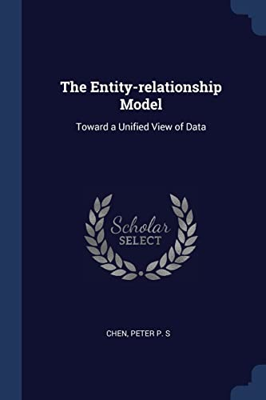

Peter on praegu Pittsburghis asuva Carnegie-Melloni ülikooli õppejõud.
Peterit tunnustatakse ER-i modelleerimise väljatöötamise eest andmebaaside kujundamiseks 1970. aastatel.
Peter töötas varem koolis MIT Sloan School of Management dotsendina.
Peter avaldas 1976. aastal raamatu ER mudelitest.
